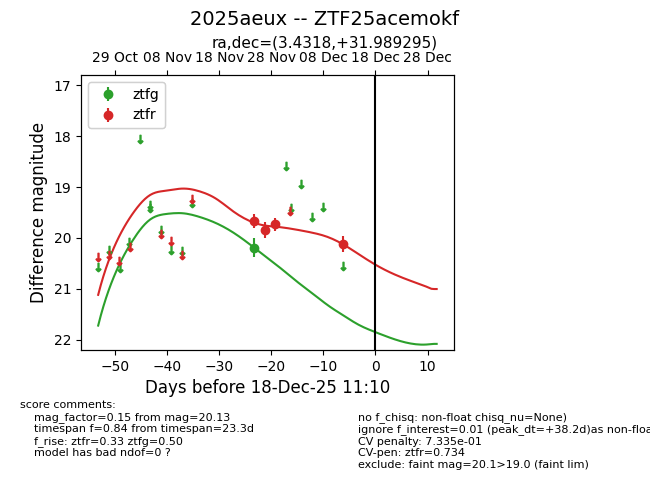
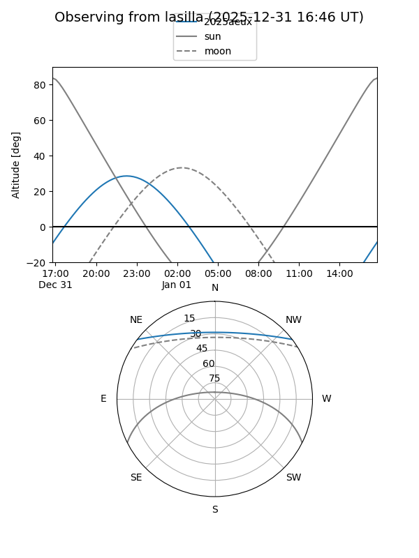
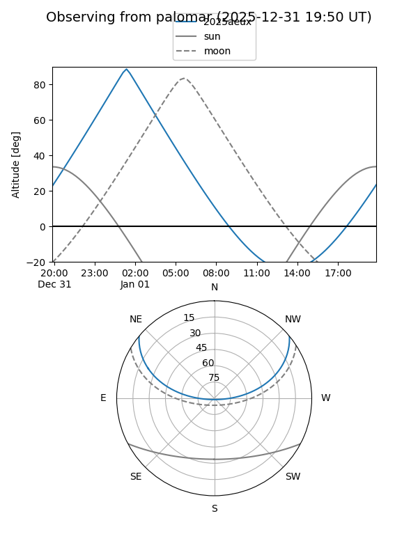
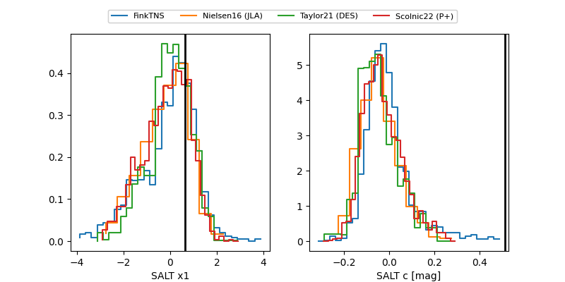

2025aeux
Target 2025aeux at 2025-12-18 11:17
Aliases and brokers:
FINK: fink-portal.org/ZTF25acemokf
Lasair: lasair-ztf.lsst.ac.uk/objects/ZTF25acemokf
ALeRCE: alerce.online/object/ZTF25acemokf
TNS: wis-tns.org/object/2025aeux
YSE: ziggy.ucolick.org/yse/transient_detail/2025aeux
alt names
ZTF25acemokf (ztf,fink_ztf)
2025aeux (tns,yse)
Coordinates:
equatorial (ra, dec) = 3.4318,+31.98930
equatorial (HMS+DMS) = 00:13:43.64,+31:59:21.46
galactic (l, b) = (113.6814,-30.20418)
Photometry
last ztfg=20.19, ztfr=20.13
1 ztfg, 4 ztfr detections
Lightcurve

Visibility


Additional plots
